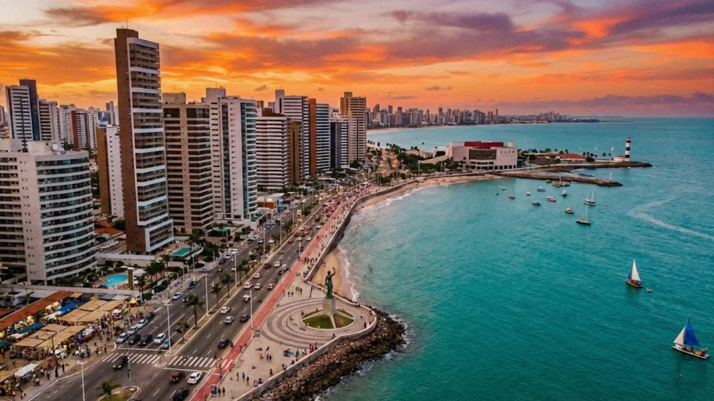
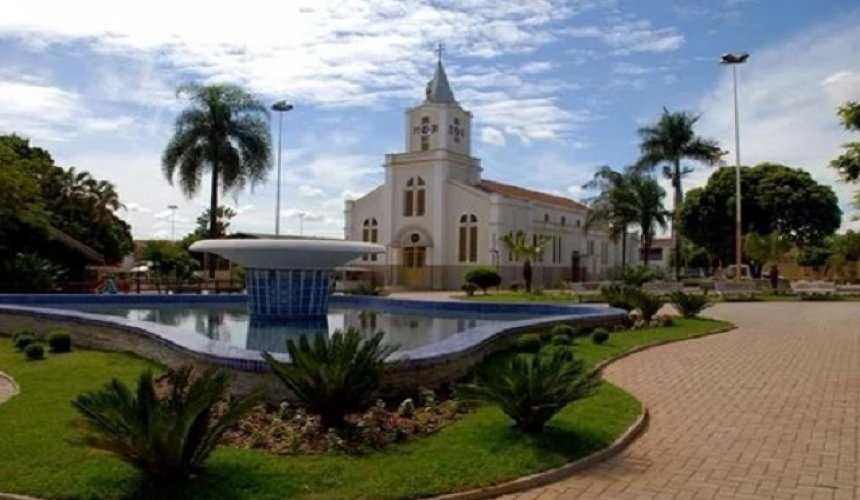
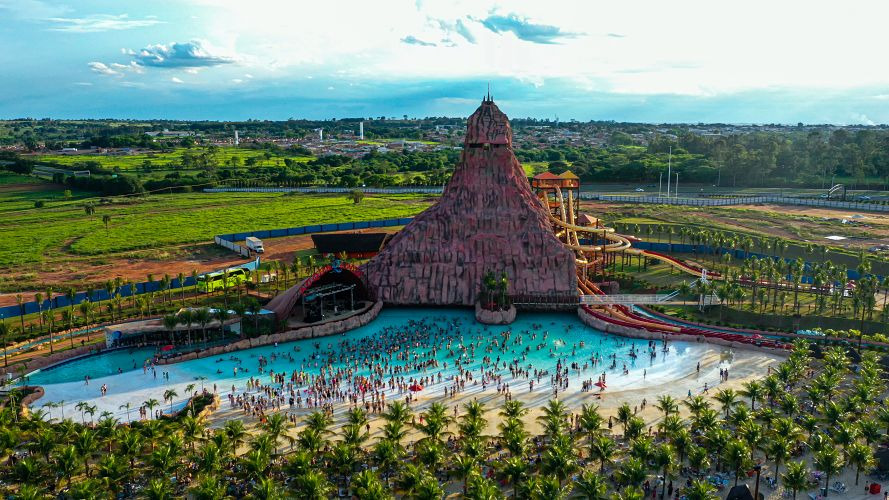
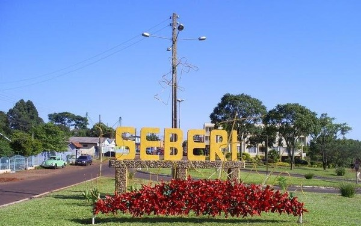

Voltar à pagina inicial
Guilherme Santana
Quem eu sou?
- Guilherme Alves Santana
- 15 anos - 14/06/2010
- Osasco - São Paulo
Curiosidades
- Corinthians é o meu time do coração <3
- Já trinquei o crânio 2 vezes
- Nasci de 8 meses
Lugares que já fui
- Fortaleza - Ceará

Conheça Fortaleza!
- Guapiaçu - São Paulo

Conheça Guapiaçu!
- Andradina - São Paulo

Conheça Andradina!
- Seberi - Rio Grande do Sul

Conheça Seberi!
Lugares que quero ir
Voltar ao início